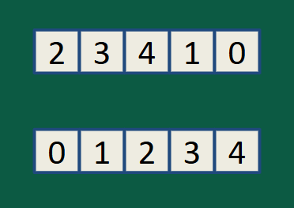

Assignment Intro
Personally, this unit wasn't really that bad. The unit was primarily about the different kind of sorts, with the most important ones we focused on being selection and insertion sort. However, the assignment I picked for this was the sorting presentations we made for which my group made a presentation of Cycle Sort. All these sorting methods rearranged numbers in order to get them to their correct location. Each of these sorts had their own space and time complexity which varies between types of sorts and sets them apart.
Programming Concept

When given an array of numbers in a random order, cycle sort is a relatively easy-to-understand way to sort them. If we refer to the photo, to get from array 1 to array 2, we take the starting element of the array and count the number of elements in the array that are smaller than the starting element. That number tells us the index position it should be at so we move the element to that location and kick out (or give the boot) to whichever element is already there until the index of the starting element is reached, announcing the end of one cycle. The program then moves to the next element and this is repeated until the loop is sorted.
Challenges
There were not really many challenges that arose from this presentation other than the fact that we relied heavily on geeks for geeks to understand and teach cycle sort as it was a new concept to us and to everyone else in the class (as a unique presentation topic).
Solutions
As there weren't any problems that arose, there weren't any solutions that needed to be implemented.
Reflection
This was honestly the most fun unit out of them all as we got to listen to presentations and experience them with live and video demonstrations. I can also perfectly recall most of the concepts from this lesson so I will say that this was by far the best unit of the course.